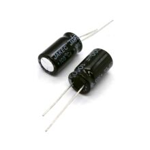

Конденсатор электролитический 1000 мкФ 25 В, 10×17 мм
ПассивныеЭто алюминиевый электролитический конденсатор номиналом 1000 мкФ на 25 В, в типоразмере примерно 10×17 мм. Такой элемент используют для сглаживания пульсаций, фильтрации питания и накопления энергии в электронных схемах.
Это полярный электролитический конденсатор общего назначения, который обычно ставят в цепи питания после выпрямителей, в DC-DC преобразователях, аудиотехнике и бытовой электронике. Номинал 1000 мкФ при 25 В указывает на пригодность для фильтрации низкочастотных пульсаций и кратковременной поддержки нагрузки. Корпус 10×17 мм соответствует распространённому радиальному исполнению для монтажа в отверстия платы. Точные ESR, ток пульсаций и ресурс зависят от конкретной серии производителя, поэтому для публичной карточки без маркировки лучше не привязывать их к одному значению. Для этой позиции уместно указывать только общие параметры и назначение.